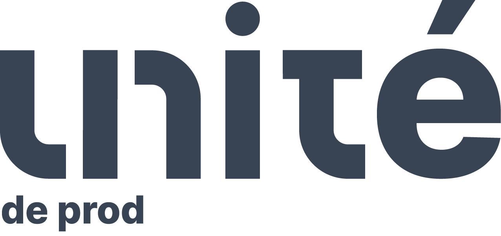

Durant ce stage de 2 mois, j'ai pu travailler avec Cyril Couchoud. Unité de prod est son entreprise. Il est aussi le président de Vienne.TV qui est une association.
Donc, durant ce stage, j'ai pu travailler un peu pour les 2. J'ai pu travailler pour des clients, faire du montage, du rigging sur After Effects et de la captation pour Unité de prod. Tandis que j'ai pu faire des contenus pour Vienne.TV.
Durant ce stage, j'ai énormément appris sur Première Pro, le montage de manière générale et le storytelling dans le montage.